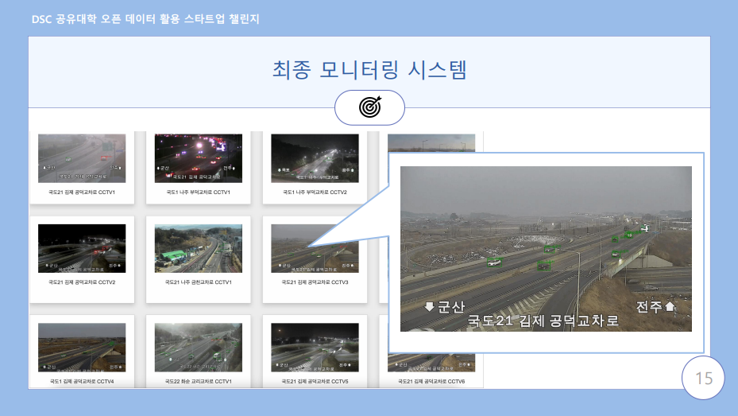

실시간 이상 운전 차량 탐지 시스템
국도 CCTV 영상에서 이상 운전 차량을 실시간 탐지
Role 전처리, 모델 개발
3
Models
YOLOv4 · CLRNet · Swin Transformer
CCTV
Data Source
국도 공공데이터 영상
E2E
Pipeline
수집 → 라벨링 → 학습 → 탐지

Pipeline
- 01문제 정의
- 02CCTV 수집
- 03Bounding Box 라벨링
- 04모델 학습
- 05객체 탐지
- 06성능 비교
Impact
YOLOv4, CLRNet, Swin Transformer 3종 모델을 동일 데이터셋으로 학습·평가하여 탐지 정확도와 추론 속도를 비교. OpenCV 기반 실시간 모니터링 UI 연결.